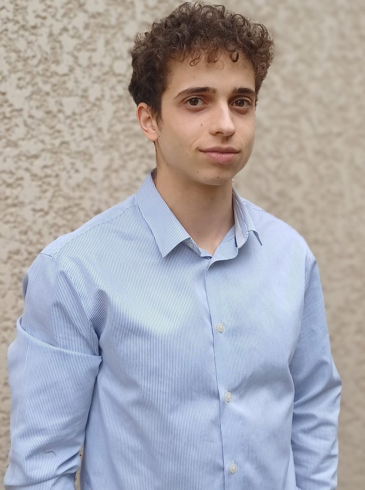

David Cabanillas
Engineering student at ENSEEIHT
A bilingual French–Spanish future engineer who applies computer science to real scientific problems, with the persistence of a national-level climber.

Between physics and code
I am a first-year engineering student in Digital Sciences (Sciences du Numérique) at Toulouse INP–ENSEEIHT, after the INP integrated preparatory programme Prépa T² (Prépa Toulouse Transitions).
My path has always been split between two passions: computer science, which I discovered in high school, and physics. A research internship in heat-transfer simulation showed me that I did not have to choose. Software is what allows science to tackle problems too large or too complex to solve by hand, and this is where I want to work.
Born and raised in France to Spanish parents, I hold both nationalities and feel at home in both cultures. Outside the classroom, I have been climbing since I was seven, up to the French national championships. The sport taught me patience, rigour and how to keep calm when the next move is not obvious.
At a glance
- ProgrammeDigital Sciences, Year 1
- SchoolToulouse INP–ENSEEIHT
- PreviouslyPrépa T², Toulouse INP
- BaccalaureateHighest honours
- NationalitiesFrench & Spanish
- LanguagesFR · ES · EN · IT
- SportNational-level climber
Inside this portfolio
Engineering Course
Skills, projects and written productions from Prépa T² and ENSEEIHT.
View →International Mobility
My languages and three mobility projects: Norway, Canada and Chile.
View →Sustainability & Civic Engagement
Workshops and actions on climate, the environment and gender-based violence.
View →Sport & Activities
Competitive climbing, self-taught piano and other passions.
View →Career Development
Internships, student jobs, and my CV in English and French.
View →Contact
Phone, email and LinkedIn. Feel free to get in touch.
View →